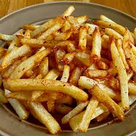

French Fries

Description
Skip the drive-thru and make irresistible seasoned fries at home. This seasoned French fry recipe creates fries that are crispy on the outside, but fluffy and tender on the inside.
Ingredients
- Potatoes
- Garlic Salt
- Onion Salt
- Paprika
- Salt
Directions
- Slice the potatoes and place them in cold water to prevent browning.
- Sift the flour and seasonings, then gradually stir in water to make a batter.
- Drain and dry the sliced potatoes, then dip in the batter.
- Fry the potatoes until golden brown and crispy.
Home